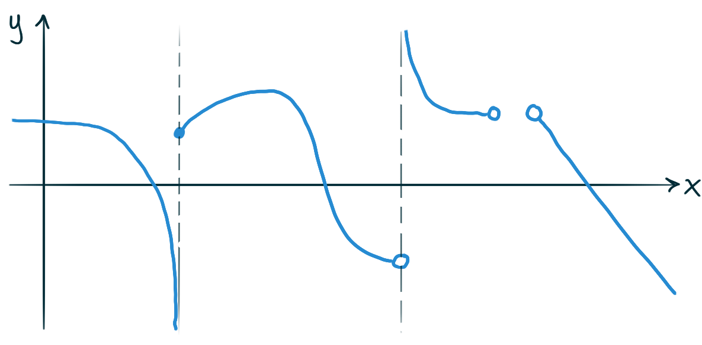
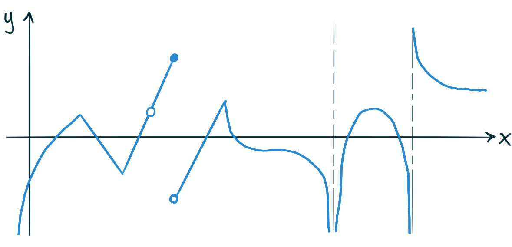

Consider the function \(f(x) = x(x-4)^3.\)
Without referring on technology,
first verify that these are the first two derivatives of \(f.\)
\[ f'(x) = 4(x-4)^2(x-1) \qquad \qquad f''(x)= 12(x-4)(x-2) \]
Then answer these questions about the graph \(y = f(x)\)
What are the coordinates of the \(x\)- and \(y\)-intercepts?
On what intervals is the function increasing? Decreasing?
What are the \((x,y)\) coordinates
of any local minimum/maximum values?
On what intervals is the graph concave up? Concave down?
Find the \((x,y)\) coordinates of any inflection points, if any exist.
What are the values of the following limits?
\[ \lim\limits_{x \to \infty} f(x) \qquad \qquad \lim\limits_{x \to -\infty} f(x) \]
Using everything you now know,
accurately sketch the graph \(y = f(x)\)
The Extreme Value Theorem guarantees
that the function \(f(x) = 5x^3-2x^2-2x\) achieves an
absolute (global) minimum value and maximum value
on the domain \(\left[-\frac 1 2, 1\right]\).
Using only the aid of a basic pocket (phone) calculator,
calculate this absolute minimum value and absolute maximum value,
and briefly argue why these must be the minimum and maximum.
Since sine is continuous
between \(\theta = 0\) and \(\theta = \frac \pi 2,\)
by the Intermediate Value Theorem
there must be some number \(c\) between \(0\) and \(\frac \pi 2\)
such that the output \(\sin(c)\) is equal to
the average value of sine on that interval.
Find the average value of sine between
\(\theta = 0\) and \(\theta = \frac \pi 2\),
and find such a number \(c\).
For each of the following statements, decide if it is true or false.
If it is false, sketch the graph of a function that serves
as a counterexample to the statement.
If \(f\) is continuous on the interval \([a,b]\),
then there must be some \(c\) in the interval \([a,b]\) such that
\(f(c)\) is a maximum on \([a,b]\).
If \(f\) is continuous on the interval \([a,b]\),
then there must be some \(c\) in the interval \([a,b]\) such that
\(f(c)\) is a minimum on \([a,b]\).
If \(f\) is continuous on the open interval \((a,b)\),
then there must be some \(c\) in the interval \((a,b)\) such that
\(f(c)\) is a maximum on \((a,b)\).
If \(f\) is defined (not necessarily continuous)
everywhere on the interval \([a,b]\),
then there must be some \(c\) in the interval \([a,b]\) such that
\(f(c)\) is a maximum on \([a,b]\).
If \(f\) has a local minimum or a local maximum at \(x=c\)
and if \(f'(c)\) exists, then \(f'(c) = 0\).
If \(f\) has a local minimum or a local maximum at \(x=c\)
then \(f'(c) = 0\).
If \(f'(c) = 0\)
then \(f\) has a local minimum or a local maximum at \(x=c\)
A functions with domain of all real numbers
must have either a local minimum or a local maximum
somewhere on it's domain.
If \(f\) is a continuous the interval \([a,b]\)
and differentiable on the interval \((a,b)\)
then there must be some \(c\) in the interval \((a,b)\) such that
\(f'(c) = \frac{f(b)-f(a)}{b-a}\).
If \(f\) is a continuous the interval \([a,b]\),
then there must be some \(c\) between \(a\) and \(b\) such that
\(f'(c) = \frac{f(b)-f(a)}{b-a}\).
If \(f\) is a polynomial function with root \(r\)
then \(f'(r) \neq 0\).
For a function \(f\) that is differentiable
on some domain containing \(a\) and \(b\),
if \(f(a) \lt f(b)\) then \(f'(a) \lt f'(b)\).
For a differentiable function \(f\) that unbounded above
(i.e. the outputs of \(f\) are arbitrarily large),
the derivative \(f'\) will also be unbounded above.
Suppose that \(g\) is a function
such that \(g(-1) = 1\) and \(g'(x) \geq 3\) for all \(x.\)
What is the smallest possible value that \(g(3)\) could be?
Suppose that \(g\) is a function such that \(g(1)=3\)
and \(1 \leq g'(x) \leq 4\) for all \(x.\)
Show that \(8 \leq g(6) \leq 23.\)
Here are the graphs of a couple of functions.
For each of these functions´ graphs,
sketch the graph of the derivative of the function
on the same set of axes.
Also draw a small square over every point \((x, f(x))\)
where \(f''(x) = 0.\)
 
James Stewart
Show that the curve
\[y = \frac{1+x}{1+x^2}\]
has three inflections points,
and that they all lie on a common line.
What’s an equation for the unique quadratic polynomial function
that has a global maximum at the point \((-1,2)\)
and passes through the point \((3,4)?\)
What’s an equation for the unique quadratic polynomial function
\(f\) such that \(f(3) = f'(3) = f''(x) = 3?\)
What’s an equation for the unique quadratic polynomial function
that is decreasing for \(-\infty \lt x \lt 5\)
and has a root at \(x = 2?\)
What’s an equation for the unique cubic polynomial function
that has local extrema at the points \((1,1)\) and \((3,3)\)
and a \(y\)-intercept at \(2?\)
Find a function \(f\) such that \(f'(-1) = \frac 1 2 \),
\(f'(0) = 0\), and \(f''(x) \gt 0\)
for all \(x\), or prove that such a function cannot exist.
Sketch the graph of a differentiable function
that has an inflection point at \(x = 2\)
but is strictly increasing for all \(x\) around \(2.\)
Without appealing to technology
write out an argument that the function
\(f(x) = 3x-2\sin(x)+7\)
has exactly one zero.